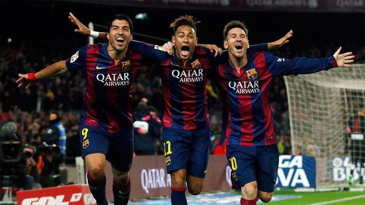
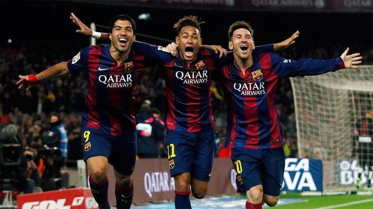

Futbol Club Barcelona, commonly known as FC Barcelona and colloquially as Barça, is a professional football club based in Barcelona, Catalonia, Spain, that competes in La Liga, the top flight of Spanish football. Founded in 1899 by a group of Swiss, Catalan, German, and English footballers led by Joan Gamper, the club has become a symbol of Catalan culture and Catalanism, hence the motto "Més que un club" ("More than a club"). Unlike many other football clubs, the supporters own and operate Barcelona. It is the third-most valuable football club in the world, worth $5.6 billion, and the world's fourth richest football club in terms of revenue, with an annual turnover of €800.1 million. The official Barcelona anthem is the "Cant del Barça", written by Jaume Picas and Josep Maria Espinàs. Barcelona traditionally play in dark shades of blue and garnet stripes, hence nicknamed Blaugrana.
 

Concisely
- Full Name: Futbol Club Barcelona
- Nickname(s) Barca or Blaugrana or Culers or Barcelonistes
- Founded in 29 November, 1899; 125 years ago(as Football Club Barcelona)
- Ground Estadi Olímpic Lluís Companys
- Capacity 55,926
- President: Joan Laporta
- Head coach: Hansi Flick
- League: La Liga 2024-25 La Liga, 1st of 20 (champions)
- Website: fcbarcelona.com